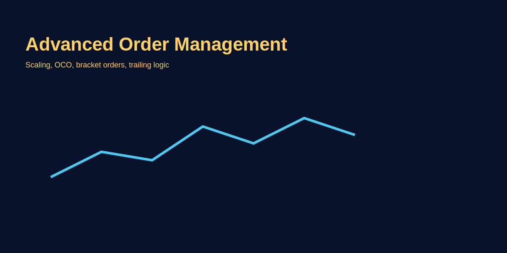

Advanced Order Management
Intro
Execution is part of the edge. Learn OCO, iceberg, trailing entries, and scale rules to improve fills and risk control.
Step-by-step
- Choose primary order type for entry (limit vs market) depending on liquidity.
- Define scale-in/out plan and OCO (one-cancels-other) rules.
- Use conditional orders for automated partial exits and trailing stops.
GOLD example
For XAU/USD, use a limit entry near support, OCO for stop and target, and a conditional trailing stop to protect profits.
Image example
Common mistakes
- Overcomplicating orders causing execution errors.
Pro tips
- Test order flows in demo to validate real fills and latencies.
Risk warning
Automated orders reduce emotion but can execute in fast-moving markets; always size accordingly.